Quick question? Get fast answers on Twitter.
Tweet a question to @37signals for a quick answer between – Mon–Fri.
Basecamp has lots of ways to keep you informed about what's going on in your projects!
Your Progress page is a timeline of all the activity in your projects. 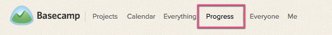 It's updated in real time, and contains info about new posts, new projects, edits, deletions, and so on. Scroll back through Basecamp history to see everything in the order it happened. 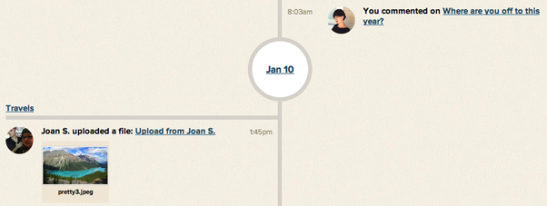
When you look at a project, you'll see the last three updates right at the top. 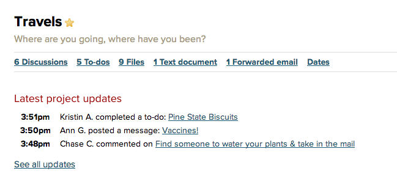 Click "See all updates" to get the full history of your project. You can scroll all the way back to the beginning! 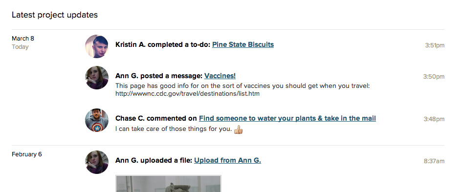
You can see day by day history on the Catch up page. Click into that project, then on the "Catch up" link, top right. 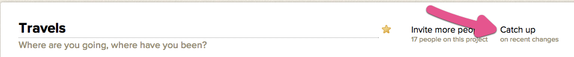 You'll see the day-by-day activity – who contributed, what was added, what was updated ... 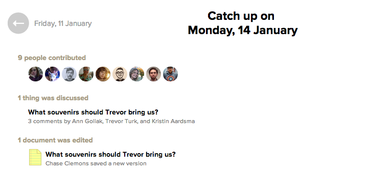 ... and the minute-by-minute history. 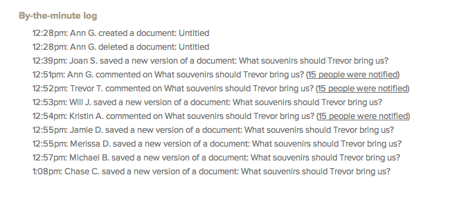
The Everything page gives you a breakdown of all the items in your account. 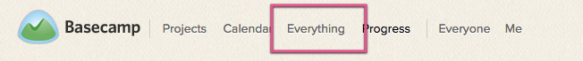 It’s especially useful for those times when you know a file was uploaded, or a discussion was going on, but you don’t remember which project it was in! 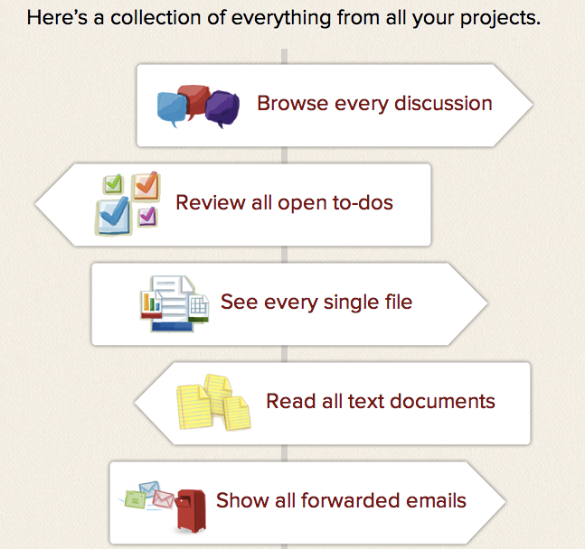
Basecamp will send you an email, once daily at 7 a.m. The Daily Recap contains all the updates for all your projects. Sign up on your Settings page. 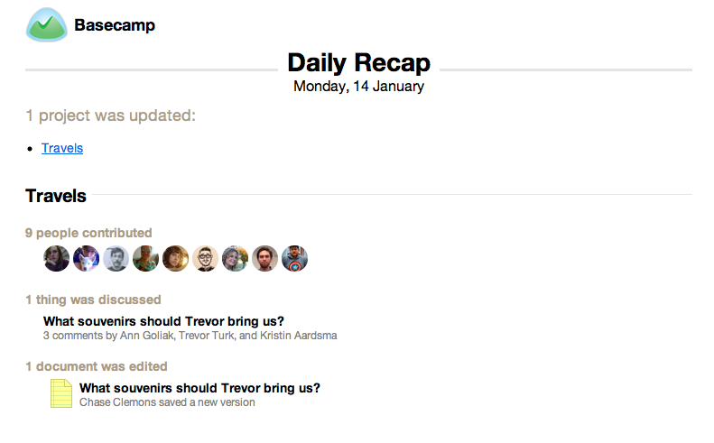
Each item has its own history. You can see who created it and when, and who made any edits. 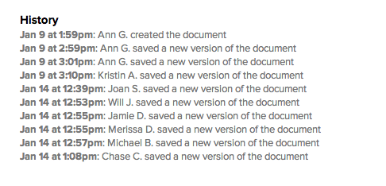
RSS feeds let you see the latest updates in a project from a feed reader. Each project has its own authenticated RSS feed. You can find it at the bottom of each project page. 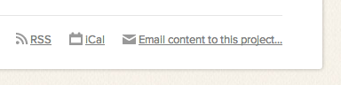 You'll need a program that can read authenticated RSS feeds to read your Basecamp updates. On a PC you can use Feed Demon. If you're using a Mac, you can use Net News Wire. If you want to get upates on your iPad, you can use Feed Hopper.
Next help article: Searching in Basecamp →
Tweet a question to @37signals for a quick answer between – Mon–Fri.
For in-depth questions, you can file a support ticket to get answered personally by us.